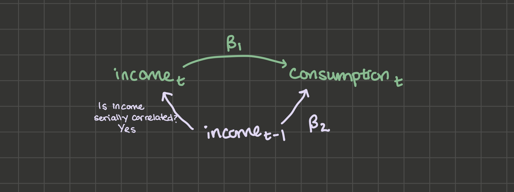

7 Time Series
7.1 Introduction
So far, we’ve been thinking in terms of having cross-sectional data.
Definition. Cross-sectional Data: a type of data where a population is sampled at the same time. For example, 1,000 high schoolers across the country are selected and sent a survey. Or 100 small businesses in the state of Oregon are selected and asked questions about how many people they employed this year. Or 100 counties in the US are asked how many cases of covid they had in the last month.
In this chapter and the next, we’ll switch focuses toward time series data.
Definition. Time Series Data: a type of data where a single subject is observed at different points in time. For example, one student’s mathematics standardized test score is observed every year. Or one small business is asked how many people they employ each year for ten years consecutively. Or Lane County is asked how many cases of covid they had in the last month for 30 months in a row.
Then in chapter 11, we’ll discuss a causal inference strategy called diff-in-diff that can be used on a third data type, panel data.
Definition. Panel Data: a type of data where several subjects are observed at different points in time. For example, 100 students’ mathematics standardized test scores are observed every year. We’ve actually already become familiar with one example of panel data: the gapminder dataset is panel data because it has observations from different countries across different years.
7.2 Overview
What to expect in this chapter:
- 7.3 Time-series models can be static or dynamic. A simple example of a dynamic model is a model with lags (previous values) of variables as explanatory variables.
Definition. Static Model: a time series model where the current value of a variable is modeled by current values of explanatory variables. Example: inflation this month is a function of unemployment this month, and not unemployment last month or inflation last month.
Definition. Dynamic Model: a time series model where the current value of a variable is modeled by previous values of variables (or even expectations of future values of variables). Example: inflation from the last few months may impact inflation this month, along with unemployment from the last few months.
Definition. Lag: a value that a variable took at a previous time period. For example, the lag of GDP per capita in 2022 is the GDP per capita in 2021. There can also be second, third, fourth lags: the second lag of GDP per capita in 2022 is GDP per capita in 2020.
- If you omit a lag of a variable when you shouldn’t have, you’ll get omitted variable bias. But when you include many lags, you’ll get multicollinearity. There are 2 solutions to this problem: first differencing the data 7.4 and including a lag of the dependent variable 7.5.
Definition. First Difference: a variable minus the lag of the variable. The first difference is the amount by which the variable has changed going from one period to the next. Example: the first difference of the variable y is y - lag(y). If y was 50 last month and is 60 this month, the first difference of y this month would be 10 becaue it went up by 10 this month.
Including a lag of the dependent variable yields biased but consistent estimates as long as \(u_t\) is not autocorrelated.
7.6 When \(u_t\) is autocorrelated, consequences are similar to heteroskedasticity consequences: conventional standard errors are wrong, OLS is no longer BLUE (FGLS is more efficient), but estimates \(\hat{\beta}\) are unbiased as long as exogeneity holds. To detect autocorrelation in \(u_t\), use the Breusch-Godfrey test.
7.3 Lags
Consider data for an individual’s monthly consumer expenditure and disposable income, from when the person is age 25 to 35. We might design a static model like this:
\[consumption_t = \beta_0 + \beta_1 income_t + u_t\]
The first thing you may notice that’s different between time series models and cross-sectional models is the subscript \(t\). This model is saying that the person’s consumption in a certain month is a linear function of their income in that same month. \(\beta_0\) is still the intercept, or the expectation of the person’s consumption if their income that month was zero. \(\beta_1\) is the person’s marginal propensity to consume: out of every dollar income, the person is expected to spend \(\beta_1\) dollars.
But if we think about people consumption smoothing, or having some habit persistence, the model above doesn’t make sense. If there’s habit persistence, consumption wouldn’t change quickly when income changes. Instead, it might rise or fall slowly over a few months until it reaches a new level corresponding to the new income level. A model that incoorporates some consumption smoothing is a dynamic model with a lag:
\[consumption_t = \beta_0 + \beta_1 income_t + \beta_2 income_{t-1} + u_t\]
Or even multiple lags:
\[consumption_t = \beta_0 + \beta_1 income_t + \beta_2 income_{t-1} + \beta_3 income_{t-2} + \beta_4 income_{t-3} + u_t\]
Suppose the data generating process for \(consumption_t\) is:
\[consumption_t = \beta_0 + \beta_1 income_t + \beta_2 income_{t - 1} + \varepsilon_t\]
But we omit the lag of income and instead fit the static model:
\[consumption_t = \beta_0 + \beta_1 income_t + u_t\]
Will \(\hat{\beta_1}\) suffer from omitted variable bias?
Notice that \(u_t\) becomes \(\beta_2 income_{t - 1} + \varepsilon_t\). So \(\hat{\beta_1}\) suffers from OVB if we can draw the two lines out from \(u_t\), that is, \(income_{t-1}\):

\(income_{t-1}\) and \(consumption_t\) covary: the relationship between them is \(\beta_2\). \(income_t\) and \(income_{t-1}\) also very likely covary: when you get a job, you hold it for multiple time periods and your income in that job is, if not constant, it’s serially correlated.
So the answer to the question of “will \(\hat{\beta_1}\) suffer from omitted variable bias if a lag is omitted” is yes.
Should you then always include as many lags as possible? No, because multicollinearity becomes an issue and you’ll get large standard errors. I’ll provide 2 potential solutions:
First difference the data
Include a lag of the dependent variable as an explanatory variable
7.4 First Differences
Take the data generating process from above:
\[consumption_t = \beta_0 + \beta_1 income_t + \beta_2 income_{t - 1} + u_t \tag{7.1}\]
Step the equation up one period, changing \(t\) to \(t + 1\) and \(t - 1\) to \(t\):
\[consumption_{t+1} = \beta_0 + \beta_1 income_{t+1} + \beta_2 income_{t} + u_{t+1} \tag{7.2}\]
This lets us see the long-run effect of a 1 unit increase in \(income_t\). If \(income_t\) gets a 1-unit boost, then Equation 7.1 says \(consumption_t\) will get a \(\beta_1\) boost. And Equation 7.2 says \(consumption_{t+1}\) will get a \(\beta_2\) boost. Since the process only includes the current period’s income and last period’s income, the bump to \(income_t\) won’t affect consumption other than in the \(consumption_t\) equation and in the \(consumption_{t+1}\) equation. So the “long-run” (total) effect of the 1-unit bump to \(income_t\) on consumption is \(\beta_1 + \beta_2\).
The first-differences model allows you to estimate that long-run effect along with \(\beta_1\) and \(\beta_2\) without multicollinearity. Take the \(consumption_t\) formula and add and subtract \(\beta_2 income_t\):
\[\begin{align*} consumption_t &= \beta_0 + \beta_1 income_t + \beta_2 income_t + \beta_2 income_{t - 1} - \beta_2 income_t + u_t \\ &= \beta_0 + (\beta_1 + \beta_2) income_t - \beta_2 (income_t - income_{t - 1}) + u_t \end{align*}\]
So instead of running lm(consumption ~ income + lag(income)), you estimate lm(consumption ~ income + I(income - lag(income))). The variable income - lag(income) is called the first difference of income: it’s the amount by which income changes each period. It will be much less correlated with \(income_t\) than \(income_{t-1}\) was, so the multicollinearity issue is solved. And you can back out \(\beta_1\) and \(\beta_2\) from the original model. Suppose you estimate that:
\[consumption_t = 3 + 5 income_t - 2 (income_t - income_{t - 1}) + u_t\]
Then the parameters of the original model are 3, 3, and 2.
7.5 Include \(y_{t-1}\)
Instead of estimating this model (y ~ x + lag(x)):
\[consumption_t = \beta_0 + \beta_1 income_t + \beta_2 income_{t-1} + u_t\]
Estimate this one (y ~ x + lag(y)):
\[consumption_t = \beta_0 + \beta_1 income_t + \beta_2 consumption_{t-1} + u_t\]
When you include a lag of the dependent variable as an explanatory variable, you’re implicitly including all lags of the explanatory variable. To see this, you can iteratively substitute:
\[y_t = \beta_0 + \beta_1 x_t + \beta_2 y_{t-1} + u_t \tag{7.3}\]
Step the equation back one period:
\[y_{t-1} = \beta_0 + \beta_1 x_{t-1} + \beta_2 y_{t-2} + u_{t-1} \tag{7.4}\]
And substitute Equation 7.4 for the \(y_{t-1}\) in Equation 7.3:
\[y_t = \beta_0 + \beta_1 x_t + \beta_2 \beta_0 + \beta_2 \beta_1 x_{t-1} + \beta_2^2 y_{t-2} + \beta_2 u_{t-1} + u_t\]
So by including \(y_{t-1}\), we’ve implicitly included \(x_{t-1}\).
We’ll do this process again to substitute for \(y_{t-2}\):
\[y_{t-2} = \beta_0 + \beta_1 x_{t-2} + \beta_2 y_{t-3} + u_{t-2}\]
\[y_t = \beta_0 + \beta_1 x_t + \beta_2 (\beta_0 + \beta_1 x_{t-1} + \beta_2 (\beta_0 + \beta_1 x_{t-2} + \beta_2 y_{t-3} + u_{t-2}) + u_{t-1}) + u_t\]
And you can see that by including \(y_{t-1}\), we’ve implicitly included both \(x_{t-1}\) and \(x_{t-2}\). We could keep going with this process, and we’d find that by including \(y_{t-1}\), we’ve implicity included all lags of \(x_t\). There’s no multicollinearity issue because we only need to run this regression: lm(y ~ x + lag(y)).
Including a lag of the dependent variable has the benefit of letting every lag of x effect y without introducing multicollinearity, but it has some costs, which I’ll discuss in turn:
Including \(y_{t-1}\) as an explanatory variable makes the restrictive assumption that lags of \(x_t\) effect \(y_t\) by way of a specific geometric series.
Including \(y_{t-1}\) as an explanatory variable makes estimates biased, but they may still be consistent as long as the unobservable term is not serially correlated.
7.5.1 Geometric Series Assumption
To see that including \(y_{t-1}\) as an explanatory variable makes the restrictive assumption that lags of \(x_t\) effect \(y_t\) by way of a specific geometric series, we’ll consider the long-run (total) effect of a one-unit bump to \(x_t\) on the variable \(y\):
\[y_t = \beta_0 + \beta_1 x_t + \beta_2 y_{t-1} + u_t\]
The one-unit bump to \(x_t\) creates a \(\beta_1\) bump to \(y_t\). What about \(y_{t+1}\), \(y_{t+2}\), etc? Stepping up the equation one period:
\[y_{t+1} = \beta_0 + \beta_1 x_{t+1} + \beta_2 y_{t} + u_{t+1}\]
The \(\beta_1\) sized bump to \(y_t\) will create a \(\beta_2 \beta_1\) sized bump to \(y_{t+1}\). So the total effect so far is \(\beta_1 + \beta_2 \beta_1\). Stepping up the equation to see the effect on \(y_{t+2}\):
\[y_{t+2} = \beta_0 + \beta_1 x_{t+2} + \beta_2 y_{t + 1} + u_{t+2}\]
The \(\beta_2 \beta_1\) jump to \(y_{t+1}\) creates a \(\beta_2^2 \beta_1\) jump to \(y_{t+2}\). The total effect so far: \(\beta_1 + \beta_2 \beta_1 + \beta_2^2 \beta_1\). If you continue stepping the equation up, you’ll see the pattern continues: the effect of a one-unit bump to \(x_t\) on \(y\) is:
\(\beta_1 + \beta_2 \beta_1 + \beta_2^2 \beta_1 + \beta_2^3 \beta_1 + \beta_2^4 \beta_1 + ...\)
This is an infinite geometric series, which converges as long as \(|\beta_2| < 1\). You can find the sum of this series using this trick:
I say that the geometric series assumption is restrictive because including a lag of the dependent variable may not be a good fit if you have reason to believe \(x_t\) does not impact \(y_t\) in this specific infinite geometric sequence sort of way.
7.5.2 With lagged dependent variables, estimates are biased
Take an even simpler data generating process:
\[y_t = \beta_1 y_{t-1} + u_t\]
With \(|\beta_1| < 1\) (a condition we need for stationarity, the subject of the next chapter) and \(u_t\) ~ \(N(0, \sigma^2)\). We know from chapter 2 that:
\[\hat{\beta_1} = \beta_1 + \sum_t w_t u_t\]
Where \(w_t = \frac{y_{t-1} - \bar{y}}{\sum_t (y_{t-1} - \bar{y})^2}\)
The unbiasedness proof proceeds as follows: condition on all the explanatory variables across all observations X:
\[E[\hat{\beta_1}] = \beta_1 + E\left [\sum_t w_t u_t\right ]\]
\[\sum_t E[w_t u_t | X] = \sum_t w_t E[u_t | X]\]
But in this case, \(y_t\) is included in \(X\), and \(E[u_t | y_t]\) is not a constant. Since \(u_t\) effects \(y_t\) directly, the expectation of \(u_t\) depends on \(y_t\). In other words, a lagged dependent variable in X creates endogeneity and therefore OLS estimates are biased.
To develop more intuition about the bias from this dynamic effect, we’ll continue: for further simplification, recognize that \(\bar{y}\) will be near 0 because \(E[y] = 0\):
\[E[y_t] = \beta_1 E[y_{t-1}] + u_t\]
\[E[y] = \beta_1 E[y] + E[u]\]
\[E[y] (1 - \beta_1) = 0\]
\[E[y] = 0\]
So
\[\hat{\beta_1} = \beta_1 + \frac{\sum_t(y_{t-1} - \bar{y}) u_t}{\sum_t (y_{t-1} - \bar{y})^2}\]
Simplifies to:
\[\hat{\beta_1} = \beta_1 + \frac{\sum_t y_{t-1} u_t}{\sum_t y_{t-1}^2}\]
\[E[\hat{\beta_1}] = \beta_1 + E \left [\left (\sum_t y_{t-1} u_t \right ) \left (\sum_t y_{t-1}^2\right)^{-1}\right ]\]
Evaluating the expectation on the right hand side further is beyond us, but I’ll argue that the term is negative because \(Cov(\sum_t y_{t-1}u_t, (\sum_t y_{t-1}^2)^{-1}) < 0\): when \(y_{t-1}\) and \(u_t\) are large, we can expect large \(y_t\) (and small \(y_t^{-1}\)). And when \(y_{t-1}\) and \(u_t\) are small, we can expect small \(y_t\) (and large \(y_t^{-1}\)). So when a lagged dependent variable is included, estimates will be biased downward. We’ll simulate this result in class.
7.5.3 With lagged dependent variables, estimates may still be consistent
We learned that when a lagged dependent variable is included like this:
\[y_t = \beta_1 y_{t-1} + u_t\]
estimates for \(\beta_1\) will be biased downward. But they still might be consistent: the key assumption for the consistency of OLS here is that the unobserved term is not serially correlated.
Consistency proof:
\[plim(\hat{\beta_1}) = \beta_1 + plim\left(\frac{\sum_t (y_{t-1} - \bar{y}) u_t}{\sum_t (y_{t-1} - \bar{y})^2}\right)\]
Multiply the numerator and denomenator of the fraction by \(\frac{1}{n-1}\):
\[plim(\hat{\beta_1}) = \beta_1 + plim\left(\frac{\frac{1}{n-1}\sum_t (y_{t-1} - \bar{y}) u_t}{\frac{1}{n}\sum_t (y_{t-1} - \bar{y})^2}\right)\]
\[plim(\hat{\beta_1}) = \beta_1 + \frac{Cov(y_{t-1}, u_t)}{Var(y_{t-1})}\]
And since \(u_t\) is the fresh disturbance, it should not covary with \(y_{t-1}\), which makes the estimator consistent:
\[plim(\hat{\beta_1}) = \beta_1\]
7.6 Consequences of autocorrelation in \(u_t\)
Conventional standard errors are wrong. Recall that no autocorrelation in \(u_t\) was a major assumption we used when we derived OLS standard errors in chapter 2. In the presence of autocorrelation in \(u_t\), conventional standard errors will be incorrect. There’s an adjustment you can make to them called Newey-West standard errors, which we won’t go into detail about.
\(\hat{\beta_1}\) is unbiased along as we have exogeneity (no lagged dependent variables, no omitted variable bias, etc). No autocorrelation in \(u_t\) was not something we needed to assume to get \(\hat{\beta_1}\) to be unbiased.
OLS is no longer BLUE because there exists a more efficient estimator FGLS (feasible generalized least squares). We’ll explore FGLS in the next section.
Note: These 3 consequences should remind you of the consequences of heteroskedasticity!
7.6.1 FGLS
Feasible Generalized Least Squares (FGLS) is a more efficient estimator than OLS when \(u_t\) is autocorrelated, but you need to make an assumption about the type of autocorrelation \(u_t\) has. This should remind you about how WLS is a more efficient estimator than OLS under heteroskedasticity, but to use WLS, we had to make an assumption about \(Var(u | X)\).
Suppose the model you’re trying to fit is this:
\[y_t = \beta_0 + \beta_1 x_t + u_t\]
And \(u_t\) is autocorrelated. If you’re willing to assume \(u_t\) is autocorrelated in this way, for example:
\[u_t = \rho u_{t-1} + \varepsilon_t\]
for some unknown value \(\rho\) and iid \(\varepsilon_t\), then you can take your model and subtract \(\rho y_{t-1}\) from both sides:
\[y_t - \rho y_{t-1} = \beta_0 + \beta_1 x_t + u_t - \rho y_{t-1}\]
Substitute on the right hand side \(y_{t-1} = \beta_0 + \beta_1 x_{t-1} | u_{t-1}\):
\[y_t - \rho y_{t-1} = \beta_0 + \beta_1 x_t + u_t - \rho (\beta_0 + \beta_1 x_{t-1} + u_{t-1})\]
Moving \(\rho y_{t-1}\) to the right hand side, collecting terms, and substituting \(\varepsilon_t\) for \(u_t - \rho u_{t-1}\):
\[y_t = (\beta_0 - \rho \beta_0) + \rho y_{t-1} + \beta_1 x_t - \rho \beta_1 x_{t-1} + \varepsilon_t\]
So by running the regression y ~ lag(y) + x + lag(x), you can in theory identify \(\rho\), \(\beta_0\), and \(\beta_1\). And notice that the error term is only \(\varepsilon\), which was assumed iid and therefore not autocorrelated.
7.6.2 Testing for autocorrelation in \(u_t\)
When we studied heteroskedasticity, we learned about 2 tests: the Goldfeld-Quandt test and the White test.
There is also a test you could use to detect autocorrelation in \(u_t\):
The intuition is that if \(u_t\) is autocorrelated, it’s likely that \(e_t\) will also be autocorrelated. So after fitting your original model, you could take the residuals and you could fit this model:
\[e_t = \beta_0 + \beta_1 e_{t-1} + \varepsilon_t\]
And do a hypothesis test where the null is \(\beta_1 = 0\). That will tell you if the lag of e seems to have an effect on e (“first-order autocorrelation”).
But there’s a problem: if there’s a lagged dependent variable in your original model, or another source of endogeneity, then biased estimates mean that \(e_t\) may not be a good enough estimate of \(u_t\). The solution is to add all explanatory variables from the original model \(x_t\) to the test to correct for the endogeneity:
\[e_t = \beta_0 + \beta_1 e_{t-1} + \beta_2 x_t + \varepsilon_t\]
This is called the Breusch-Godfrey test for autocorrelation. The test statistic is \(n R^2\), where \(n\) is the number of observations in the second regression and \(R^2\) is the R-squared from the second regression. Under the null of no autocorrelation, the test statistic is distributed \(\chi^2\) with 1 degree of freedom if you’re testing for first-order autocorrelation.
7.7 Exercises
Classwork 11: Dynamics (analytical)
Koans 17-18: lags and first differences
Classwork 12: Dynamics (R)
7.8 References
Dougherty (2016) Chapter 11: Models Using Time Series Data
Dougherty (2016) Chapter 12: Autocorrelation